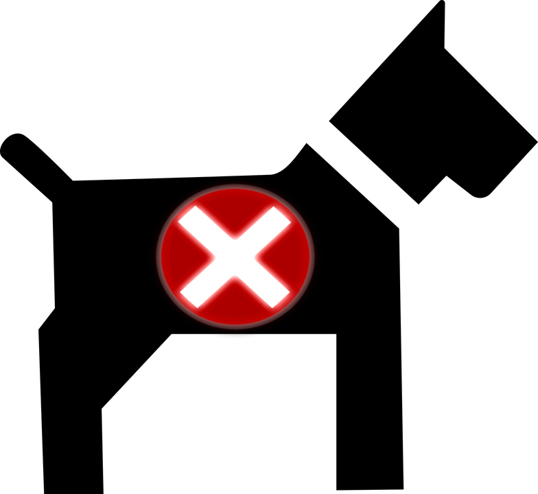

<ion-header>
  <ion-toolbar>
    <ion-buttons slot="start">
      <ion-back-button></ion-back-button>
    </ion-buttons>
    <ion-title >Mis adopciones</ion-title>
  </ion-toolbar>
</ion-header>
<ion-content>
  <div style="text-align: center;" *ngIf="carga == true">
    <ion-spinner name="bubbles"></ion-spinner>
  </div>
  <ion-refresher slot="fixed" (ionRefresh)="doRefresh($event)">
    <ion-refresher-content></ion-refresher-content>
  </ion-refresher>
  <div class="advertencia" *ngIf="carga == false && status == true && page == 1">
      
     <p>No existe adopciones</p>
    </div>
  <ion-list *ngIf="adopciones && carga == false">
    <ion-item *ngFor="let adp of adopciones" (click)="redirec(adp.adopcion._id)">
      <ion-avatar slot="start">
        
      </ion-avatar>
      <div class="datos">
          <div class="datos-name">
              <h3>{{adp.adopcion.mascota.nombre}}</h3>
              <ion-label [class.estP]="adp.adopcion.estado == 0 || adp.adopcion.estado == 1"
              [class.estA]="adp.adopcion.estado == 2" *ngIf="adp.adopcion.estado == 0">pendiente</ion-label>
              <ion-label [class.estP]="adp.adopcion.estado == 0 || adp.adopcion.estado == 1"
              [class.estA]="adp.adopcion.estado == 2" *ngIf="adp.adopcion.estado == 1">aprobado</ion-label>
              <ion-label [class.estP]="adp.adopcion.estado == 0 || adp.adopcion.estado == 1"
              [class.estA]="adp.adopcion.estado == 2" *ngIf="adp.adopcion.estado == 2">negado</ion-label>
            </div>
      
            <div class="datos-all">
                <ion-label>{{adp.adopcion.mascota.especie}}</ion-label>
                <ion-label>{{adp.adopcion.mascota.raza}}r</ion-label>
            </div>
      </div>
  
      
    </ion-item>
  </ion-list>
  <ion-infinite-scroll threshold="100px" (ionInfinite)="loadData($event)">
      <ion-infinite-scroll-content
        loadingSpinner="bubbles"
        loadingText="agregando adopciones...">
      </ion-infinite-scroll-content>
    </ion-infinite-scroll>
</ion-content>

